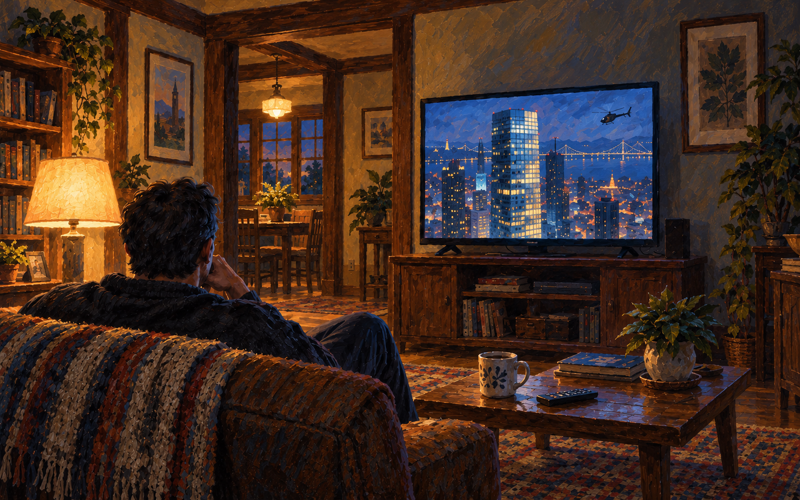

PART ONE · THE SURFACE
Chapter 1
Opening excerpt 5:20
End of the pilot
Narration generated using Gemini. Illustrations created with GPT image generation.

Opening excerpt 5:20
End of the pilot
Narration generated using Gemini. Illustrations created with GPT image generation.